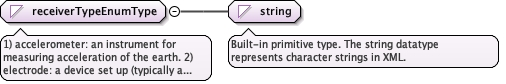

1) accelerometer: an instrument for measuring acceleration of the earth.2) electrode: a device set up (typically a pair of metal rods with a voltmeterconnecting the two) for measuring the electrical potential difference in the earthbetween the electrode pair. 3) Geiger-Muller counter: a device for measuringradioactivity by detecting and counting ionizing particles. 4) geophone: a devicethat measures velocity by converting ground movement into voltage. 5)gravimeter: aninstrument used to measure gravitational acceleration. 6) hydrophone: a microphonedesigned to be used underwater for recording or listening to underwater sound. 7)magnetometer: an instrument for measuring the strength and direction of magneticfields, 8) RF coil: a receiver of radiofrequency signals in equipment used inmagnetic resonance and electromagnetic induction methods. 9) radio wave antenna: anantenna attached to a receiver used to detect radio waves (a type of electromagneticradiation with frequencies of 300 gigahertz (GHz) and below). 10) scintillationdetector: an instrument for detecting and measuring ionizing radiation by using theexcitation effect of incident radiation on a scintillating material, and detectingthe resultant light pulses. 11) seismometer: an instrument used to measure groundmotions by detecting relative movement between a "stationary" mass and a framecoupled to the earth. Typically seismometers contain sensors to measure motions onmultiple axes. 12) sodium iodide detector: a device for measuring gammma radiationat various frequencies that uses sodium iodide as the detector. 13) VLF receiverantenna: an antenna designed to detect radio frequencies in the range of 3-30 kHz.
Diagram

Type
restriction of string
Facets
enumeration
accelerometer
enumeration
electrode
enumeration
Geiger-Muller counter
enumeration
geophone
enumeration
gravimeter
enumeration
hydrophone
enumeration
magnetometer
enumeration
RF coil
enumeration
radio wave antenna
enumeration
scintillation detector
enumeration
seismometer
enumeration
sodium iodide detector
enumeration
VLF receiver antenna
Source
<simpleType name="receiverTypeEnumType"><annotation><documentation>1) accelerometer: an instrument for measuring acceleration of the earth. 2) electrode: a device set up (typically a pair of metal rods with a voltmeter connecting the two) for measuring the electrical potential difference in the earth between the electrode pair. 3) Geiger-Muller counter: a device for measuring radioactivity by detecting and counting ionizing particles. 4) geophone: a device that measures velocity by converting ground movement into voltage. 5)gravimeter: an instrument used to measure gravitational acceleration. 6) hydrophone: a microphone designed to be used underwater for recording or listening to underwater sound. 7) magnetometer: an instrument for measuring the strength and direction of magnetic fields, 8) RF coil: a receiver of radiofrequency signals in equipment used in magnetic resonance and electromagnetic induction methods. 9) radio wave antenna: an antenna attached to a receiver used to detect radio waves (a type of electromagnetic radiation with frequencies of 300 gigahertz (GHz) and below). 10) scintillation detector: an instrument for detecting and measuring ionizing radiation by using the excitation effect of incident radiation on a scintillating material, and detecting the resultant light pulses. 11) seismometer: an instrument used to measure ground motions by detecting relative movement between a "stationary" mass and a frame coupled to the earth. Typically seismometers contain sensors to measure motions on multiple axes. 12) sodium iodide detector: a device for measuring gammma radiation at various frequencies that uses sodium iodide as the detector. 13) VLF receiver antenna: an antenna designed to detect radio frequencies in the range of 3-30 kHz.</documentation></annotation><restriction base="string"><enumeration value="accelerometer"/><enumeration value="electrode"/><enumeration value="Geiger-Muller counter"/><enumeration value="geophone"/><enumeration value="gravimeter"/><enumeration value="hydrophone"/><enumeration value="magnetometer"/><enumeration value="RF coil"/><enumeration value="radio wave antenna"/><enumeration value="scintillation detector"/><enumeration value="seismometer"/><enumeration value="sodium iodide detector"/><enumeration value="VLF receiver antenna"/></restriction></simpleType>